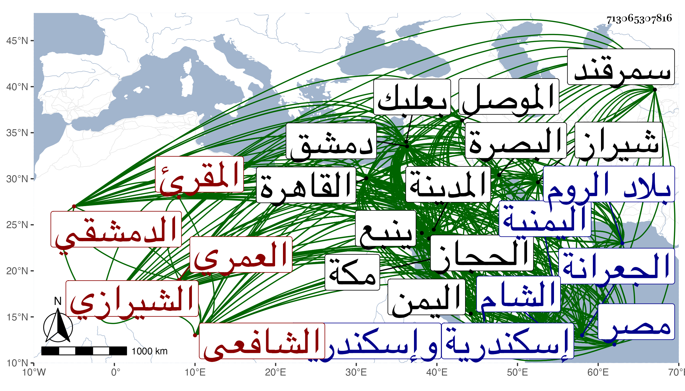

0902Sakhawi.DawLamic.ITO20230111-ara1.EIS1600.713065307816
Biography ID: 713065307816
608
محمد بن محمد بن محمد بن علي بن يوسف الشمس أبو الخير العمري الدمشقي ثم الشيرازي الشافعي المقرئ ويعرف بابن الجزري نسبة لجزيرة ابن عمر قريب الموصل . كان أبوه تاجرا فمكث أربعين سنة لا يولد له ثم حج فشرب ماء زمزم بنية ولد عالم فولد له هذا بعد صلاة التراويح من ليلة السبت خامس عشرى رمضان سنة إحدى وخمسين وسبعمائة داخل خط القصاعين بن السورين بدمشق ونشأ بها فحفظ القرآن وأكمله سنة أربع وستين وصلى به في التي بعدها وحفظ التنبيه وغيره وأخذ القراآت إفرادا عن عبد الوهاب بن السلار وجمعا على أبي المعالي بن اللبان وحج في سنة ثمان فقرأها على أبي عبد الله محمد بن صلح خطيب طيبة وإمامها ، ودخل في التي تليها القاهرة فأخذها عن أبي عبد الله بن الصائغ والتقى البغدادي في آخرين بهذه الأماكن وغيرها واشتد اعتناؤه بها وسمع على بقايا من أصحاب الفخر بن البخاري وجماعة من أصحاب الدمياطي والأبرقوهي في آخرين بدمشق والقاهرة وإسكندرية وغيرها ومن شيوخه ابن أميلة وابن الشيرجي وابن أبي عمر وإبراهيم بن أحمد بن فلاح والعماد بن كثير وأبو الثناء محمود المنيجي والكمال بن حبيب والتقي عبد الرحمن البغدادي المشار إليه ومن أهل إسكندرية البهاء عبد الله الدماميني وابن موسى ومن أهل بعلبك أحمد بن عبد الكريم ، وطلب بنفسه وقتا وكتب الطباق وأخذ الفقه عن الأسنوي والبلقيني والبهاء أبي البقاء السبكي والأصول والمعاني والبيان عن الضياء القرمي والحديث عن العماد بن كثير وابن المحب والعراقي ، وأذن له غير واحد بالإفتاء والتدريس والإقراء بالعادلية ثم مشيخة دار الحديث الأشرفية ثم مشيخة تربة أم الصالح بعد شيخه ابن السلار وعمل فيه إجلاسا بحضور الأعلام كالشهاب بن حجي وقال كان درسا جليلا ، وباشر للأمير قطلوبك وسافر بسبب ذلك لمصر غير مرة ، وولي من برقوق خطابة جامع التوتة عن الشهاب الحسباني وتنازعا ثم قسمت بينهما ثم ولي تدريس الصلاحية القدسية في سنة خمس وتسعين عوضا عن المحب بن البرهان بن جماعة فدام فيها إلى ابتداء سنة سبع وتسعين ووقع بينه وبين قطلوبك المذكور وادعى عليه أنه صرف أموالا في غير مستحقها وعقد له بسبب ذلك عدة مجالس وولي قبل ذلك توقيع الدست في سنة تسع وسبعين ، وابتنى بدمشق للقرآن مدرسة بل ولي قضاءها بمال وعد به في شعبان سنة ثلاث وسبعين عوضا عن الشرف مسعود وكتب توقيعه فيما قيل مما يحتاج لتحرير العماد بن كثير وعزل بعد أيام قبل دخولها ثم امتحن بسبب مباشرته تعلقات أيتمش على يد أستاداره قطلبك وسلم لوالي القاهرة ليعمل له الحساب فوقف عليه مال عجز عنه ففر في سنة ثمان وتسعين وركب البحر من إسكندرية ولحق ببلاد الروم فاتصل المؤيد أبي يزيد بن عثمان صاحب مدينة برصافأ كرمه وعظمه وأنزله عنده بضع سنين فنشر علم القراآت والحديث وانتفعوا به فلما دخل تمر الروم وقتل ابن عثمان توصل إليه ودخل معه سمرقند فأقام بها حتى مات فتحول لشيراز ونشر بها أيضا القراآت والحديث وانتفعوا به وولي قضاءها وغيرها من البلاد من جهة أولاد تمر مدة طويلة ، ثم قصد الحج في سنة اثنتين وعشرين فنهب في الطريق بحيث تعوق عن إدراك الحج وأقام بينبع ثم بالمدينة وكان دخوله لها في ربيع الأول من التي تليها ثم توجه منها إلى مكة فدخلها مستهل رجبها فجاور فيها بقيتها وحدث في كل منهما ثم سافر مع العقليين طالبا بلاد العجم ثم قدم دمشق في سنة سبع وعشرين فاستأذن منها في قدوم القاهرة فأذن له فقدمها واجتمع بالسلطان الأشرف فعظمه وأكرمه وتصدى للإقراء والتحديث وكان كاتب المؤيد قبل ذلك في دخولها فمات المؤيد في تلك السنة إلى أن كان دخوله الآن ثم توجه فيها لمكة مع الحاج ثم سافر في البحر لبلاد اليمن تاجرا فأسمع الحديث عند صاحبها ووصله بحيث رجع ببضائع كثيرة وعاد لمكة فحج سنة ثمان ثم رجع إلى القاهرة فدخلها من أول التي تليها ثم سافر منها على طريق الشام ثم على طريق البصرة إلى شيراز فكانت منيته بها قبل ظهر يوم الجمعة خامس ربيع الأول سنة ثلاث وثلاثين بمنزله من سوق الإسكافيين منها ودفن بمدرسته التي أنشأها هناك . وله تصانيف مفيدة كالنشر في القراآت العشر في مجلدين والتقريب مختصره وتحبير التيسير في القراآت العشر والتمهيد في التجويد وهما مما ألفه قديما وله سبع عشرة سنة كذلك نظم الهداية في تتمة العشرة وسماه الدرة وله ثمان عشرة سنة وربما حفظها أو بعضها بعض شيوخه ، وإتحاف المهرة في تتمة العشرة وإعانة المهرة في الزيادة على العشرة نظم وطيبة النشر في القراءات العشر في ألف بيت والمقدمة فيما على قارئ القرآن أن يعلمه في التجويد ومنجد المقرئين وطبقات القراء في مجلد ضخم وغايات النهايات في أسماء رجال القراآت والحصن الحصين من كلام سيد المرسلين في الأذكار والدعوات غاية في الاختصار والجمع وعدة الحصن الحصين وجنة الحصن الحصين والتعريف بالمولد الشريف وعرف التعريف مختصره والتوضيح في شرح المصابيح والبداية في علوم الرواية والهداية في فنون الحديث أيضا نظم والأولوية في أحاديث الأولية وعقد اللآلئ في الأحاديث المسلسلة العوالي والمسند الأحمد فيما يتعلق بمسند أحمد والقصد الأحمد في رجال مسند أحمد والمصعد الأحمد في ختم مسند أحمد والإجلال والتعظيم في مقام إبرهيم والإبانة في العمرة من الجعرانة والتكريم في العمرة من التنعيم وغاية المنى في زيارة منى وفضل حراء وأحاسن المنن وأسنى المطالب في مناقب علي بن أبي طالب والجوهرة في النحو غير ذلك ، وقد ذكره الطاوسي في مشيخته وقال أنه تفرد بعلو الرواية وحفظ الأحاديث والجرح والتعديل ومعرفة الرواة المتقدمين والمتأخرين يعني بالنسبة لتلك النواحي وأورد أسانيده بالصحيحين وأبي داود والنسائي وابن ماجة وبمسانيد الدارمي والشافعي وأحمد وبموطأ ملك عن طريق يحيى بن يحيى وأبي مصعب والقعنبي وابن بكير وبمصنفات البغوي والنووي كما سقتها في التاريخ الكبير . وقال شيخنا في معجمه أنه حدث بسنن أبي داود والترمذي عن ابن أميلة سماعا وبمسند أحمد عن الصلاح بن أبي عمر سماعا وأن من أحسن ما عنده الكامل في القراآت لابن جبارة ، وساق سنده وأنه سمع على ابن أميلة أمالي ابن سمعون قال وخرج لنفسه أربعين عشارية لفظها من أربعي شيخنا العراقي وعير فيها أشياء ووهم فيها كثيرا وخرج جزءا فيه مسلسلات بالمصافحة وغيرها جمع أوهامه فيه في جزء الحافظ ابن ناصر الدين وقفت عليه وهو مفيد وكذا انتقد عليه شيخنا في مشيخة الجنيد البلياني من تخريجه قال وقد أجاز لي ولولدي وكتب في الاستدعاء ما نصه ونقلته من خطه :
| إني أجزت لهم رواية كل ما | أرويه من سنن الحديث ومسند |
| وكذا الصحاح الخمس ثم معاجم | والمشيخات وكل جزء مفرد |
| وجميع نظم لي ونثر والذي | ألفت كالنشر الزكي ومنجد |
| فالله يحفظهم ويبسط في حيا | ة الحافظ الحبر المحقق أحمد |
| وأنا المقصر في الورى العبد الفقي | ر محمد بن محمد بن محمد |
قال وكنت لقيته في سنة سبع وتسعين وحرضني على الرحلة إلى دمشق وقد حدثت عنه في حياته بكتابه الحصن الحصين يعني بالوجادة فقال قال صاحبنا فلان لكونه لم تكن سبقت له منه إجازة وحصل له في البلاد اليمنية بسبب ذلك رواج عظيم وتنافسوا في تحصيله وروايته ، ثم دخل بعد نيف وعشرين وقد مات كثير ممن سمعه فسمعه الباقون وأولادهم عليه قال ولما أقام بمكة نسخ بخطه من أول المقدمة التي جمعتها أول شرح البخاري واستعان بجماعة حتى أكملها تحصيلا وكان أرسل إلى صاحبنا التقي الفاسي في مكة من شيراز يسأله عن تعليق التعليق الذي خرجته في وصل تعاليق البخاري فاتفق وصول كتابه وأنا بمكة ومعي نسخة من الكتاب فجهزتها إليه فجاء كتابه يذكر ابتهاجه وفرحه بها وأنه شهر الكتاب بتلك البلاد وأهدى إلى بعد ذلك كتابه النشر المذكور ، قلت وهو في مجلدين وكتب على كل مجلد منهما بالإجازة لشيخنا قال والتمس أن ينشر في الديار المصرية وقدر مجيئه هو فنشره وعلما كثيرا ثم أرسل إلي من شيراز بالمقدمة والتعليق فألحقت بهما ما كان تجدد لي بعد حصولهما له وكتب عني شيئا من أول ما علقته متعقبا على جمع رجال مسند أحمد وبالغ في استحسان ما وقع لي من ذلك . قلت حسبما أوردته مع كتابته على مجلدي النشر في الجواهر ، قال ولما قدم القاهرة انثال الناس للسماع عليه والقراءة وكان قد ثقل سمعه قليلا ولكن بصره صحيح يكتب الخط الدقيق على عادته وليس له في الفقه يد بل فنه الذي مهر فيه القراآت وله عمل في الحديث ونظم وسط ، ووصفه في الإنباء بالحافظ الإمام المقرئ وقال أنه لهج بطلب الحديث والقراآت وبرز في القراآت وأنه كان مثريا وشكلا حسنا وفصيحا بليغا كثير الإحسان لأهل الحجاز انتهت إليه رياسة علم القراآت في الممالك ، وقال عن طبقات القراء أنه أجاد فيه وعن النشر أنه جوده وعن الحصن أنه لهج به أهل اليمن واستكثروا منه ثم قال وذكر أن ابن الخباز أجاز له واتهم في ذلك ، وقرأت بخط العلاء بن خطيب الناصرية أنه سمع الحافظ أبا إسحق البرهابن سبط ابن العجمي يقول لما رحلت إلى دمشق قال لي الحافظ الصدر الياسوفي لا تسمع مع ابن الجزري شيئا انتهى . وبقية ما عند ابن خطيب الناصرية أنه كان يتهم في أول الأمر بالمجازفة وأن البرهان قال له أخبرني الجلال بن خطيب داريا أن ابن الجزري مدح أبا البقاء السبكي بقصيدة زعم أنها له بل وكتب خطه بذلك ثم بينت للممدوح أنها في ديوان ابن قلاقس قال شيخنا وقد سمعت بعض العلماء يتهمه بالمجازفة في القول وأما الحديث فما أظن به ذلك إلا أنه كان إذا رأى للعصريين شيئا أغار عليه ونسبه لنفسه وهذا أمر قد أكثر المتأخرون منه ولم ينفرد به ، قال وكان يلقب في بلاده الإمام الأعظم ولم يكن محمود السيرة في القضاء وأوقفني بعض الطلبة من أهل تلك البلاد على جزء فيه أربعون حديثا عشاريات فتأملتها فوجدته خرجها بأسانيده من جزء الأنصاري وغيره وأخذ كلام شيخنا في أربعينه العشاريات بفصه فكأنه عمل عليها مستخرجا بعضه بالسماع وأكثره بالإجازة ومنه ما خرجه شيخنا من جزء ابن عرفة فإنه رواه عن ابن الخباز بالقراءة فأخرجه ابن الجزري عن ابن الخباز بالإجازة . قلت أما إجازة قلت أما إجازة ابن الخباز له فمحتملة فقد كان خال جده فيما رأيته في مشيخة الطاوسي وأما سرقة النظم فلم يكن بمدفوع عن النظم فكم له من تصنيف نظما وكذا أوردت من نظمه في ترجمة أبي الوليد محمد بن محمد بن محمد بن محمود بن الشحنة من الذيل على القضاة شيئا من لغز ومطارحات ومن رجزه في أحمد بن يوسف بن محمد السيرجي وكذا من نظمه في الاكتفاء مما سبق بمجرد الاكتفاء منه القيراطي :
| شيطاننا المغوي عدو فاعتصم | بالله منه والتجئ وتعوذ |
| وعدوك الأنسي دار وداده | تملكه وادفع بالتي فإذا الذي |
ونسب إليه أيضا :
| ألا قولوا لشخص قد تقوى | على ضعفي ولم يخش رقيبه |
| خبأت له سهاما في الليالي | وأرجو أن تكون له مصيبه |
وكتب في إجازة للشهاب بن هاشم وولده من أبيات :
| وذا عام تسع بعد عشرين قبلها | ثمان مئين في ربيع لدى مصر |
| ومولدي المزبور إذن وقاله | محمد المشهور بالجزري ادر |
وله في ختم الشمائل النبوية :
| أخلاي إن شط الحبيب وربعه | وعز تلاقيه وناءت منازله |
| وفاتكم إن تبصروه بعينكم | فما فاتكم بالسمع هذي شمائله |
وكذا له جواب فيما التمسه منه ابن موسى المراكشي بالنظم أودعه الفاسي في ترجمة ابن موسى ، وقد روى لنا عنه خلق منهم الزين رضوان والتقي بن فهد والأبي ومن لا يحصى كثرة وفي الأحياء سنة ست وتسعين بالقاهرة وكذا بمكة وغيرهما ممن أخذ عنه جماعة رحمه الله وإيانا . ومدحه النواحي بقوله :
| أيا شمس علم بالقراآت أشرقت | وحقك قد من الإله على مصر |
| وها هي بالتقريب منك تضوعت | عبيرا وأضحت وهي طيبة النشر |
وهو عند المقريزي في عقوده وقال كان شكلا حسنا فصيحا بليغا له نظم ونثر وخطب .
